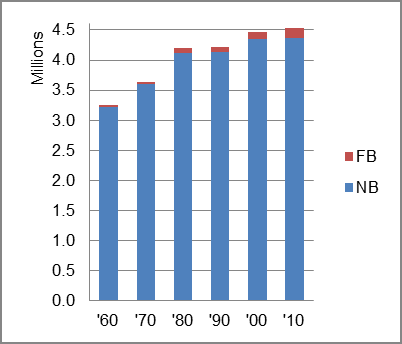

The foreign-born (FB) population increased from 30,557 in 1960 to 172,866 in 2010. That was an increase of 465.7 percent. The foreign-born share changed from 0.9 percent to 3.8 percent.
The share of the overall population that was native-born (NB) increased by 35.1 percent.
Louisiana: Population 1960-2010 
The first chart below shows the three population change factors for three periods adjusted for annual average amounts. Natural change (B-D) was the primary factor in population increase in all three periods, offsetting a net loss fron NDM in the first two periods.
The second chart shows the same data but with an adjustment to reflect births to immigrants shifted to NIM. In it, NIM rose to more than one-third of the population increase in the 2010-13 period.
Louisiana: Sources of Population Change 1990-2013 Louisiana: Sources of Population Change (Adjusted) 1990-2013
B-D NDM NIM B-D NDM NIM 90-'99 91.2% neg. 8.8% 90-'99 84.7% neg. 15.3% 00-'09 86.6% neg. 13.4% 00-'09 76.7% neg. 23.3% 10-'13 73.7% 2.7% 23.6% 10-'13 60.1% 2.7% 37.2%